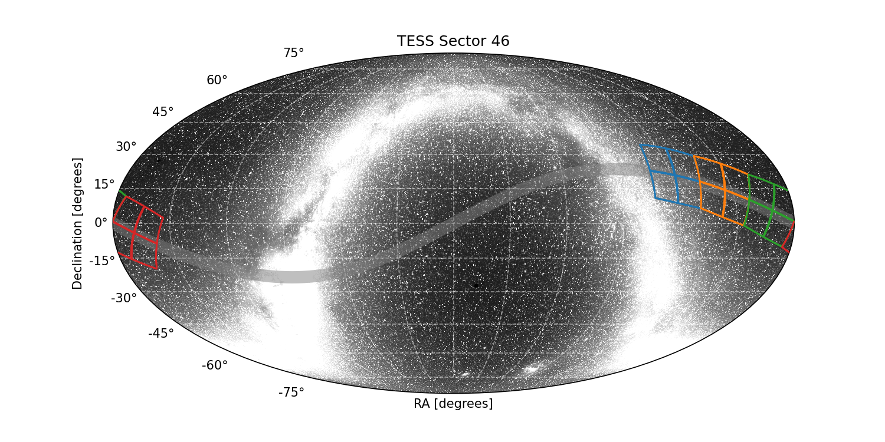

|
 |
Sector 46 Information
Happy 100 orbit anniversary!
For full data release notes see: DRN66. For a list of TIC IDs with noted issues, see this list.
Sector Summary
Spacecraft Pointing (deg)
| RA | dec | roll | |
|---|---|---|---|
| Spacecraft | 157.7 | 10.09 | 248.41 |
| Camera 1 | 121.93 | 20.78 | 348.27 |
| Camera 2 | 146.19 | 14.28 | 340.85 |
| Camera 3 | 168.9 | 5.51 | 156.88 |
| Camera 4 | 190.92 | -4.08 | 156.6 |
Orbit Summary
| Orbits | Dates (UTC) Start - End |
Cadence # Start - End |
Momentum dumps |
|---|---|---|---|
| 99 | 2021-12-03 - 2021-12-16 | 953356 - 962757 | 1 |
| 100 | 2021-12-17 - 2021-12-30 | 963761 - 972897 | 1 |
Sector Notes
| Noted Issue | Description |
| Spacecraft pointing | Sector 46 consists of observations of the ecliptic plane, with the camera array aligned along the ecliptic and Camera 1 the westernmost of the four. Within the first 13 hours of orbit 99, Camera 4 alone was used for guiding. However, the Earth passed close enough to Camera 4 after this time that guiding was switched to Camera 1. The change in guiding was done in two steps. First, Camera 1 was enabled for guiding (concurrently with Camera 4) at TJD= 2552.088254 days. Then, Camera 4 was disabled for guiding 30 minutes later, at TJD= 2552.109087 days. At these two epochs, the spacecraft pointing shifted by a small amount, less than 1". The cadences for each data mode at these epochs are marked with an Attitude Tweak anomaly flag. In some cases, especially for saturated stars, the SAP FLUX light curves exhibit a step function at these times. Camera 1 alone was used for guiding in all of orbit 100. |
| Scattered light | At the start of orbit 99, the Earth crosses through Cameras 1, 2, and 3, saturating the CCD detectors and/or causing strong glints. At the start of orbit 100, the Earth is in Camera 3 and saturates the detectors before moving close to the edge of Camera 4, while the Moon passes close to Camera 1. When the Earth or Moon are close to the camera fields of view, they cause strong glints and scattered light signals. |